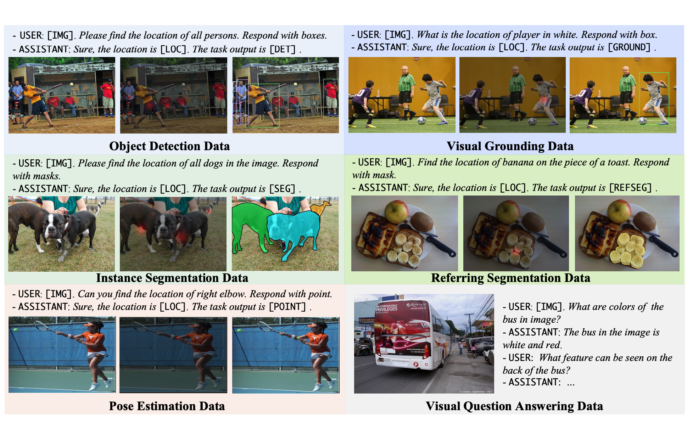
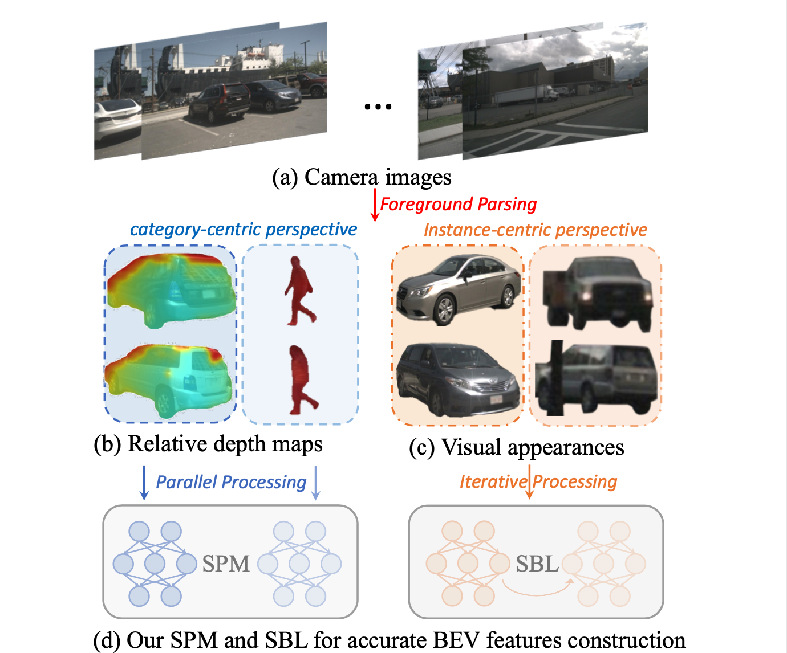
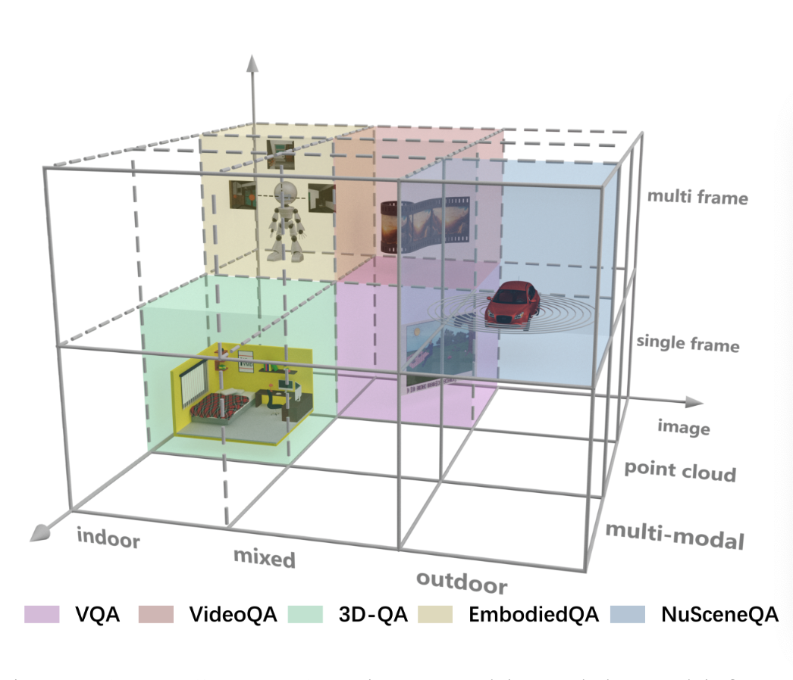
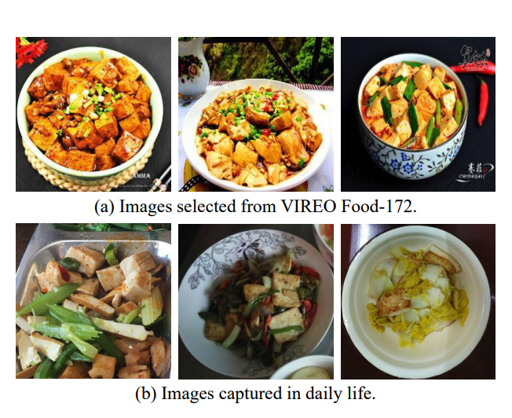
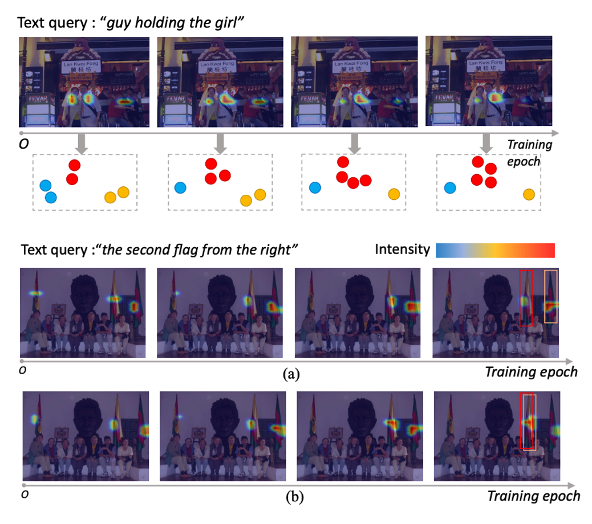
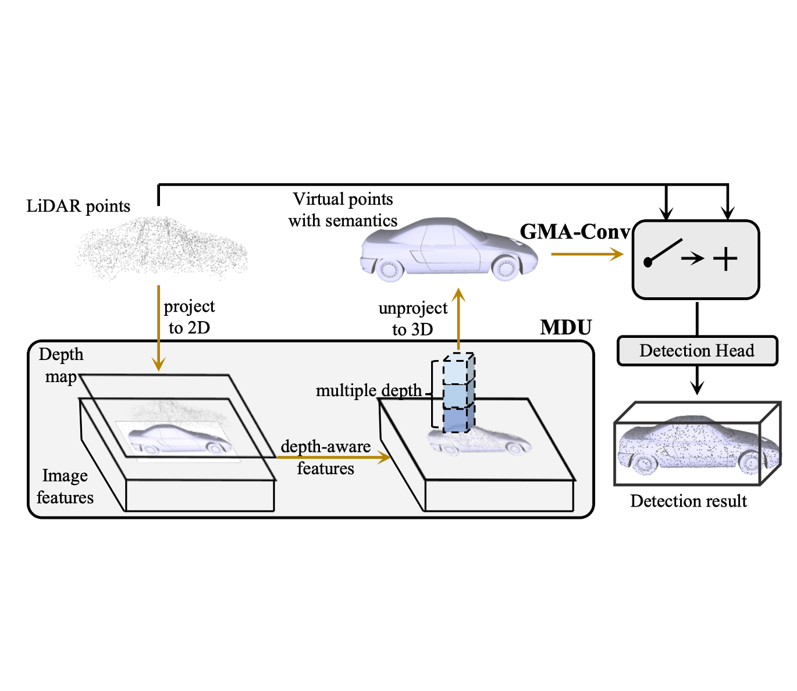
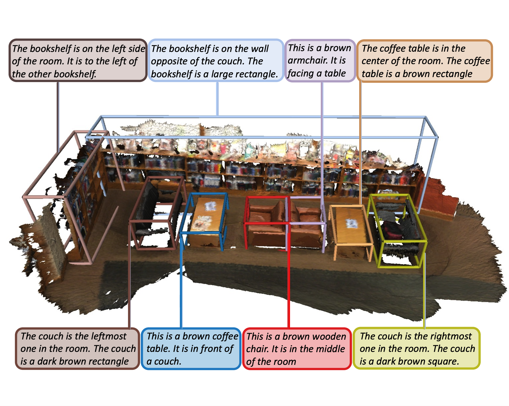
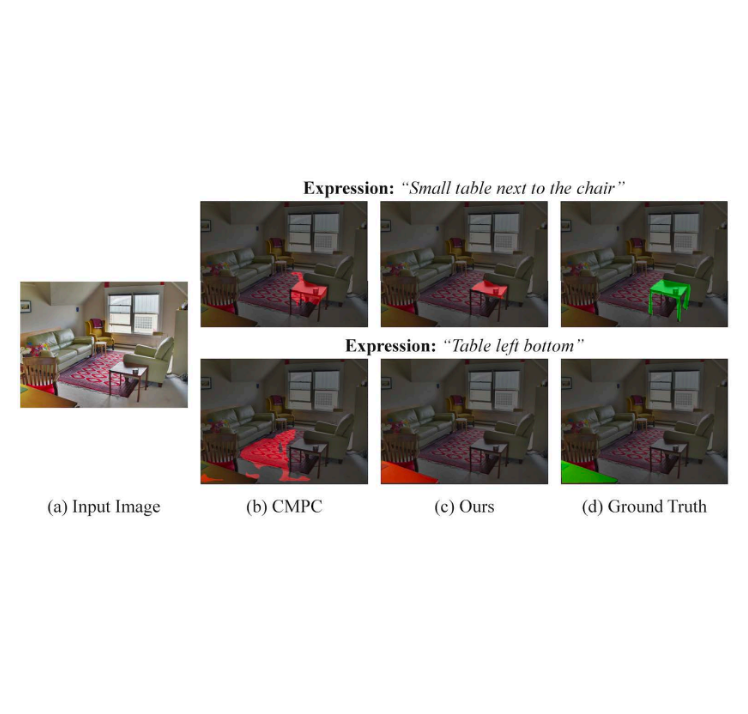
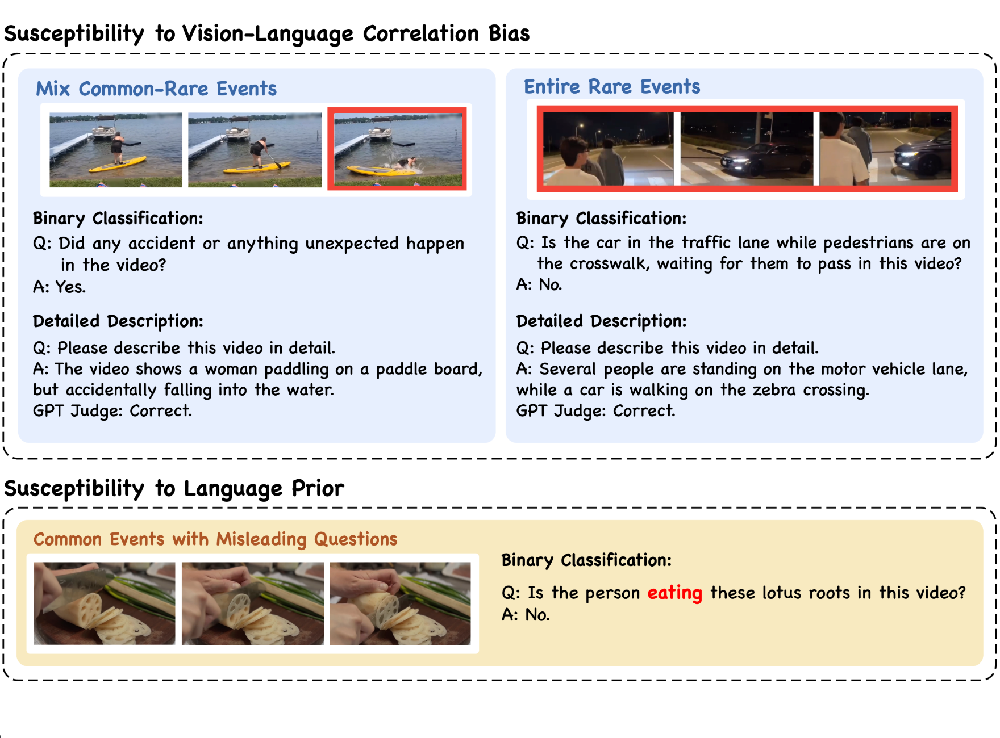
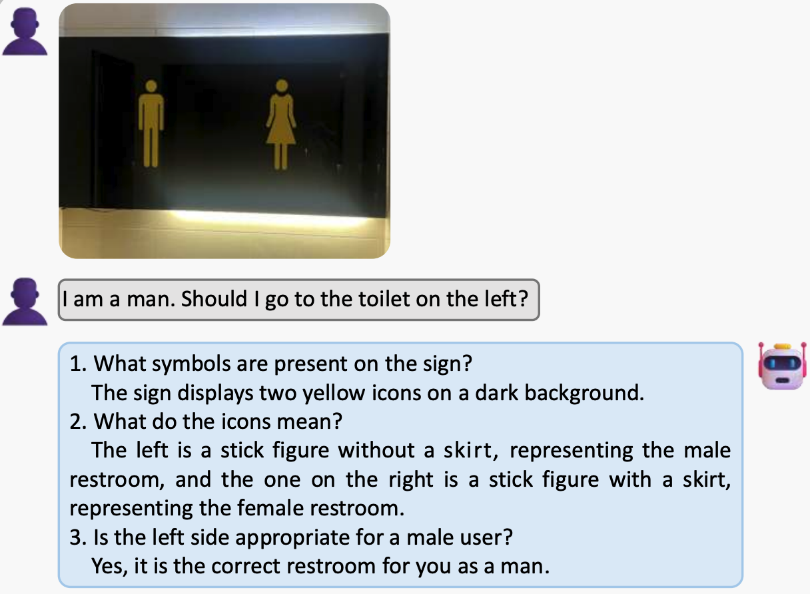

|
Yang Jiao (焦洋) I'm currently a fourth-year Ph.D student at FVL Lab of Fudan University, advised by Prof. Yu-Gang Jiang and Jingjing Chen. Before that, I received my Bachelor's degree in Yingcai Honors College of UESTC in 2021. I also work closely with Dr. Zequn Jie, Dr. Lin Ma, and Dr. Shaoxiang Chen during my internship at Meituan. My research interests include Multimodal Large Language Model, Autonomous Driving and 3D Vision. |

|
News▪️ Apr. 2025: Our UniToken, a Multimodal Large Language Model supporting unified visual understanding and image generation with advanced performances, is accepted to CVPRW 2025! ▪️ Oct. 2024: Our Lumen, a Multimodal Large Language Model with versatile vision-centric capabilities, is accepted to NeurIPS 2024! ▪️ Apr. 2024: I am supported by the Fundamental Research Project for Young Professionals from NSFC (首批国自然博士基金)! ▪️ Sept. 2023: One about Generalized Food Recognition is accepted to TMM 2024! ▪️ Sept. 2023: Two papers about Autonomous Driving are accepted to AAAI 2024! ▪️ Jul. 2023: One paper about Visual Grounding is accepted to ACM MM 2023! ▪️ Mar. 2023: Our MSMDFusion, ranking 1st and 2nd at NuScenes detection and tracking benchmarks among all single-model submission (at the time of submission), is accepted to CVPR 2023! ▪️ Jul. 2022: One paper about 3D Dense Captioning is accepted to ECCV 2022! ▪️ Jul. 2021: One paper about Referring Image Segmentation is accepted to ACM MM 2021! |
Publications |
|
|
UniToken: Harmonizing Multimodal Understanding and Generation through Unified Visual Encoding
Yang Jiao, Haibo Qiu, Zequn Jie, Shaoxiang Chen, Jingjing Chen, Lin Ma, Yu-Gang Jiang CVPRW, 2025 code/paper UniToken is an auto-regressive generation model that combines discrete and continuous representations to process visual inputs, making it easy to integrate both visual understanding and image generation tasks seamlessly. |
|

|
Lumen: Unleashing Versatile Vision-Centric Capabilities of Large Multimodal Models
Yang Jiao, Shaoxiang Chen, Zequn Jie, Jingjing Chen, Lin Ma, Yu-Gang Jiang NeurIPS, 2024 code/paper Enhancing the versatile vision-centric capabilities of existing MLLMs, such as object detection, instance segmentation, and pose estimation, without compromising their general-purpose question-answering abilities. |
|

|
Instance-Aware Multi-Camera 3D Object Detection with Structural Priors Mining and Self-Boosting Learning
Yang Jiao, Zequn Jie, Shaoxiang Chen, Lechao Cheng, Jingjing Chen, Lin Ma, Yu-Gang Jiang AAAI, 2024 paper Mining image-plane instance awareness from category-centric and instance-centric perspectives for enhanced depth estimation in the multi-view camera-based object detection. |
|

|
NuScenes-QA: A Multi-Modal Visual Question Answering Benchmark for Autonomous Driving Scenario
Tianwen Qian, Jingjing Chen, Linhai Zhuo, Yang Jiao, Yu-Gang Jiang AAAI, 2024 code/paper Introducing a novel visual question answering (VQA) task in the context of autonomous driving, aiming to answer natural language questions based on street-view clues. |
|

|
From Canteen Food to Daily Meals: Generalizing Food Recognition to More Practical Scenarios
Guoshan Liu, Yang Jiao, Jingjing Chen, Bin Zhu, Yu-Gang Jiang TMM, 2024 code/paper Presenting DailyFood-172 and DailyFood-16, both contain food images from everyday meals. And introducing a simple yet effective baseline method for mitigating the domain gap between well-curated and daily-life food images. |
|

|
Suspected Objects Matter: Rethinking Model's Prediction for One-stage Visual Grounding
Yang Jiao, Zequn Jie, Jingjing Chen, Lin Ma, Yu-Gang Jiang ACM MM, 2023 paper Explicitly mining inter-object relationships in the one-stage visual grounding paradigm. The proposed technique can be seamlessly integrated into both CNN and Transformer-based architectures. |
|

|
MSMDFusion: Fusing LiDAR and Camera at Multiple Scales with Multi-Depth Seeds for 3D Object Detection
Yang Jiao, Zequn Jie, Shaoxiang Chen, Jingjing Chen, Lin Ma, Yu-Gang Jiang CVPR, 2023 code/paper Fusing LiDAR and camera signals in multi-scale voxel fields for enhanced BEV representation. Ranking 1st and 2nd on NuScenes detection and tracking benchmarks among all single models by the time of submission. |
|

|
MORE: Multi-Order RElation Mining for Dense Captioning in 3D Scenes
Yang Jiao, Shaoxiang Chen, Zequn Jie, Jingjing Chen, Lin Ma, Yu-Gang Jiang ECCV, 2022 code/paper Progressively mining inter-object spatial relationships, advancing from single-order to multi-order interactions, to generate more descriptive and comprehensive captions for 3D scenes. |
|

|
Two-stage Visual Cues Enhancement Network for Referring Image Segmentation
Yang Jiao, Zequn Jie, Weixin Luo, Jingjing Chen, Yu-Gang Jiang, Xiaolin Wei, Lin Ma ACM MM, 2021 paper Enhancing the visual cues of referred objects in the image via a two-stage pipeline in the referring image segmentation. |
Preprints |
|

|
EventHallusion: Diagnosing Event Hallucinations in Video LLMs
Jiacheng Zhang*, Yang Jiao*, Shaoxiang Chen, Na Zhao, Jingjing Chen (* denotes equal contribution) Arxiv, 2024 code/paper Curating a novel benchmark aiming to diagnose the susceptibility of existing VideoLLMs toward language priors and spurious vision-language correspondence. And a simple-yet-effective Temporal Contrastive Decoding (TCD) method is proposed to alleviate such event-oriented hallucinations. |
|

|
Look Before You Decide: Prompting Active Deduction of MLLMs for Assumptive Reasoning
Yian Li*, Wentao Tian*, Yang Jiao, Jingjing Chen, Na Zhao, Yu-Gang Jiang (* denotes equal contribution) Arxiv, 2024 paper Curating a novel benchmark aiming to assess human-like composite reasoning capabilities of existing MLLMs. And a simple-yet-effective method, Active Deduction (AD), is proposed to encourage the model to actively perform composite deduction before reaching a final decision. |
Miscellanea |
Awards |
2023 First-class Doctoral Scholarship
2022 DongShi Enterprise Scholarship 2021 National Scholarship |
Academic Service |
Reviewer for CVPR 2025, ICML 2025
Reviewer for ICLR 2024, ICML 2024, NeurIPS 2024, CVPR 2024, AAAI 2024, IJICAI 2024 Reviewer for IJICAI 2023 |
|
This page is inspired by and adapted with gratitude from this website. |